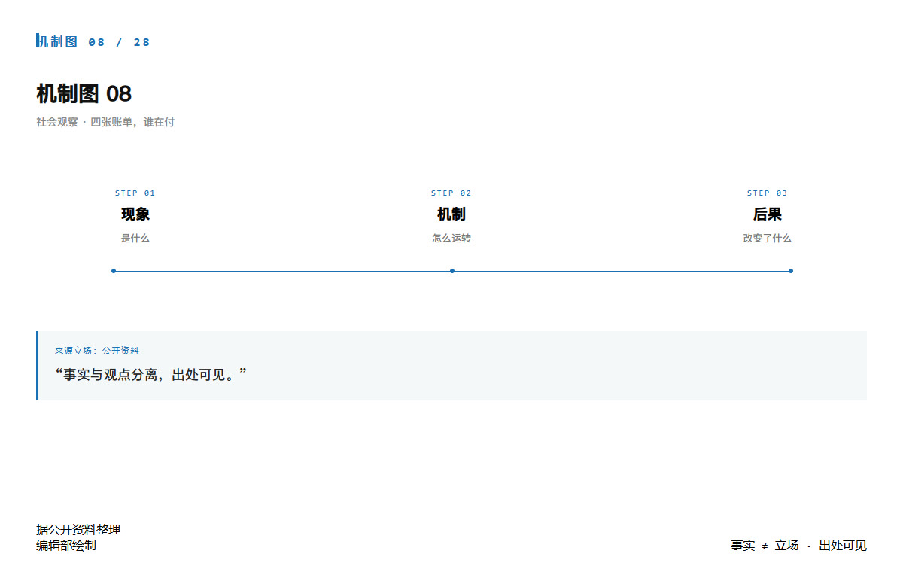

对轰有效，但账要算清
社会观察 · 四张账单，谁在付
骂赢那天，他收到一条私信：你昨天挂的那个人，是我同事。
具体私信不转述，也不核实。下面只算结构账：四张账单来自对公共骂战的观察与归纳，没有公开统计，发生概率也说不准。写它不为劝谁退出，只为把「有效」和「划算」之间那段距离摆出来。引文是编辑部的结构性概括，不是文献原话。
但这事和今天的你，有关系。四张账单里，大部分不由发起对轰的人付。你没上场，却可能在为别人的胜利买单。
用规则打规则的人，从出手那一刻起也站在规则里。镜像动员的每一项技术，挂人、做合订本、举报、挖旧账，都能原样打回来。双方共用一套武器库，没有谁有安全屋。更结构性的是随机降火：平台整治、算法调整、热点转移，随时把你从攻击方变成清理对象。
还有心理层面的回旋镖。长期使用「代价展示」的人，会逐渐把「让对方疼」当成沟通的默认手段。这不分性别，是策略对使用者的反向塑造。骂战里长大的表达者，回到日常对话还带着骂战的句法。武器会改变持枪的人。
这是四张里最大、也最容易被略过的一张。对轰的火力按标签、不按个体：男性标签、女性标签、地域、职业，一枚导弹覆盖几十万人。绝大多数人不参与对轰，只是带着这个标签过日子，却要在评论区、相亲市场、职场语境里反复中弹。
误伤还有时滞。今天被羞辱的标签，明天会变成他孩子、同事、伴侣身上的预设。公共语言是存量资产，一句戏谑里的「不配」进了语料库，就成了默认前提的候选。两边都在完成这项污染，只是各自以为自己在写判决书。
📌 一个值得记住的判断
当所有人都在对轰，最贵的公共品是「可信」。赢下一百场骂战，换不来一个能被采信的结论。
规则层作战一旦成为默认战术，事实层的公共品就没人生产了。核查报道成本高、回报低，长文分析没人读完，程序文书没人转发。这些慢内容是公共讨论的基础设施，它们枯竭之后，所有议题都只剩立场对射。
塌方的受害者包括赢家。你赢下一场又一场，回头发现没有一件事被真正查清。公共讨论的地基被掏空，站在废墟上宣布胜利，胜利本身也变得不可信。这是所有账单里最安静的一张，因为它不疼，只是慢慢什么都没有了。
每一次「成功」都在给对手演示：温和没用，只有更狠有用。均衡点于是不断上移：今天挂人，明天挖三代，后天线下；今天玩梗，明天开盒。这是标准的军备竞赛，没有单方能退出，谁先克制谁吃亏。
终局画面很清楚：所有人用最大音量说话，所有人的话都不可信。到那一步，对轰不再指向任何具体问题，只剩下音量的比拼。发声的人以为自己在争对错，其实只是在给下一轮的自己加码。
四张账单摆完，话可以说硬一点：对轰是止痛药，不是治疗方案；止痛药值得理解，不值得推广。有人会问，被结构性闭嘴的人就该忍着？不该。但算不清账的反击，最后都会变成自己反对的那种暴力。
如果你读完觉得扫兴，这份扫兴就是它的功能。这里不提供爽感，提供账本。看清楚账单，不是为了让你放弃说话，是为了让你知道自己在付什么、谁在跟你一起付，然后才谈得上选择。
编辑部结构性概括，非文献原文
"当所有人都在对轰，最贵的公共品是「可信」。"
公共品视角：可信是所有人都需要、却没人愿意出钱维护的东西。

▲ 对轰的四张账单（编辑部绘制）
✍️ 这四张账单，哪一张最让你意外？
是反噬、误伤、塌方，还是螺旋？评论区说说。觉得有用，点个赞、点个「在看」，转给也在算这笔账的人。
下一篇：扫射按标签不按个体，两个方向都在开火。
资料来源
「反噬」「随机降火」为机制比喻，指策略使用者承受同规则回击的风险；无公开统计。
「误伤按标签不按个体」为机制观察，两个方向上的扫射并陈；「军备竞赛」「全员最大音量均衡」为博弈论比喻层面的分析性判断。
四张账单（反噬／误伤／塌方／螺旋）为分析性归纳框架，非实证预测；具体骂战与个案指控不予转述。
社会观察，不站任何性别立场。事实据公开来源，未证实指控不转述、不评价。拆解规则是为了理解，不是行动指南。
出口：四张里唯一能被制度直接削减的是塌方，给事实层公共品独立的分发与激励，核查稿等权重传播、慢内容流量保底。误伤只能靠表达纪律，另两张只能靠收益表整体改写。从能动手的地方开始，别等全赢。